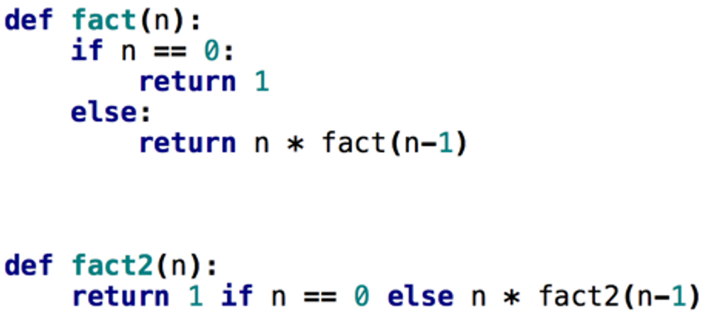

Algorithm Complexity Review & Recursion
Fred Agbo
2026-01-26
Announcements
- Welcome back!
- Reading for this week:
- Data Structures & Algorithms in Python (DS&A) - John et al.:
- Chapter 6; Due on Wednesday
- Data Structures & Algorithms in Python (DS&A) - John et al.:
- Reading for this week:
- PS1 assignment is due on Wednesday at 10pm.
- Please contact me if you have issues accepting the assignment from Github classroom
Algorithms Complexity Review [class activity]
A Few Things to Note!
- Bubble sort, selection sort, and insertion sort are all
O(n²) - As we will see later, we can do much better than this with somewhat more complicated sorting algorithms
- Within O(n²),
- Bubble sort is very slow, and should probably never be used for anything
- Selection sort is intermediate in speed
- Insertion sort is usually the fastest of the three–in fact, for small arrays (say, 10 or 15 elements), insertion sort is faster than more complicated sorting algorithms
- Selection sort and insertion sort are “good enough” for small arrays
Other Sorting Algorithms
Merge Sort
- Divide and conquer algorithm that splits the list into halves, sorts each half, and merges them.
- Time complexity: O(n log n)
- Stable and efficient for large datasets.
Quick Sort
- Selects a “pivot” element, partitions the list into elements less than and greater than the pivot, and recursively sorts the partitions.
- Average time complexity: O(n log n)
- Not stable, but very fast in practice.
Heap Sort
- Builds a binary heap from the list, then repeatedly extracts the maximum (or minimum) to sort.
- Time complexity: O(n log n)
- Not stable, but uses no extra space beyond the input list.
Counting Sort
- Assumes input consists of integers in a fixed range.
- Counts occurrences of each value, then reconstructs the sorted list.
- Time complexity: O(n + k), where k is the range of input.
- Very fast for small ranges, but not comparison-based.
Radix Sort
- Sorts numbers digit by digit, using a stable sub-sorting algorithm (like counting sort).
- Time complexity: O(nk), where k is the number of digits.
- Efficient for sorting large numbers or strings.
Introduction to Recursion
- “To understand recursion, you must first understand recursion.” - Unknown
Introduction to Recursion

A recursive action!
What is Recursion?
- An algorithm or function that is defined in terms of calls to itself.
- Why bother?
- A very different way of thinking
- Powerful programming technique
- Every recursive program can be written with iteration (i.e. using loops)
- Even so, the recursive solution to some problems is far more concise and elegant
Simple example
- print a line of n stars
Iterative [loop] solution:
How to think recursively (very informal)
- Identify the simplest possible case (the “base case”) that can be solved directly.
- Assume your function works for a smaller or simpler version of the problem.
- Use this assumption (the “recursive case”) to solve the current problem by calling the function itself.
- Make sure each recursive call brings you closer to the base case.
- Example: To print n stars recursively:
- If n == 0, do nothing (base case).
- Otherwise, print one star and call the function to print n-1 more stars.
Simple example
- print a line of n stars
Recursive solution:
Common features of all recursive algorithms
- Base case
- This is how the algorithm knows when to stop going “deeper” into the recursion
- The base case is the simplest version of the problem, and can be solved without calling itself
- Reduction step
- Reduces the current hard problem into simpler sub-problems
- This is where the recursive function calls happen
Knowledge check
- What is the Time Complexity (i.e.
Big-O notation) of these algorithms?
- Recursive printStars: O(n) — Each recursive call reduces n by 1 until reaching 0.
- Iterative printStars: O(n) — The loop runs n times.
What's More?
- Iterative vs Recursive Approaches
| Feature | Iterative Approach (for loop) | Recursive Approach |
|---|---|---|
| Time Complexity | O(n) | O(n) |
| Space Complexity | O(1) | O(n) |
| Readability | Generally considered more straightforward and easier for a new programmer to follow. | Can be more elegant and concise for certain problems, but may be harder to reason about for a simple task. |
| Performance | Typically faster. Avoids the overhead of function calls. | Slower due to the overhead of pushing and popping function call frames onto the call stack. |
| Memory Usage | Very efficient. Uses a constant amount of memory for the loop counter. | Less memory efficient. Each recursive call adds a new stack frame, potentially leading to a “Stack Overflow” error for very large values of n. |
Another Example: Facotrial (n!)
n! (n factorial) is n * (n-1) * (n-2) * (n-3) … * 1
“I don’t know how to compute n!…
- If only I had a function that could compute (n-1)!, then I could just multiply its result by n and I’d have the answer!”

Tracing fact(5)

Conceptual Exercises
recursiveMaxtakes a not-sorted list of numbers as input, and recursively finds and returns the largest number in the listrecursiveFindtakes two inputs: a number x to search for, and a not-sorted list of numbers nums to search within, and recursively finds and returns the index of the first instance of x within nums.reverseStringtakes a string as input, and using recursion returns the reverse of the string.isPrimetakes an int as input, and recursively determines if the number is prime, return True if the number is prime, and False otherwise.
Next class!
- To discuss some application of recursion
- Read ahead!